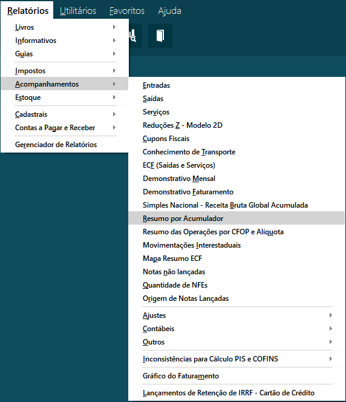
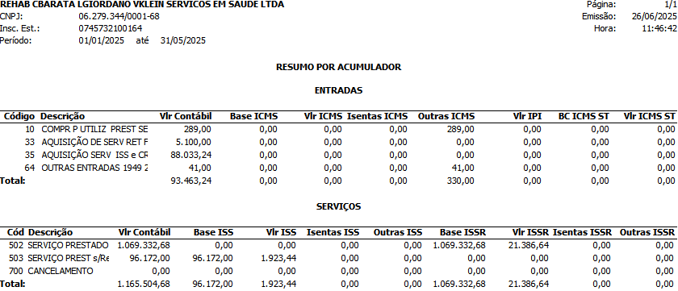
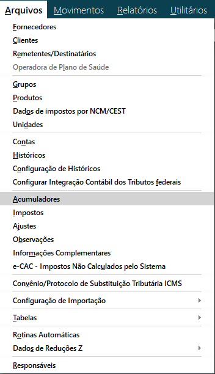

Para determinados clientes, essa configuração é estratégica no controle do contas a receber, pois permite a elaboração de um balanço mais robusto e detalhado, especialmente no que se refere à composição do grupo de clientes a receber no ativo.
Porque fazer a segreção dos clientes?
1 - Parâmetros
Antes de iniciarmos as configurações, vamos selecionar previamente as seguintes opções nos parâmetros do sistema.
Parâmetros → Contabilidade

Obs: Criar uma nova conta" poderá ser desmarcada posteriormente, a fim de evitar a duplicidade de registros no sistema.
2 - IDENTIFICAÇÃO DE ACUMULADORES
Relatórios → Acompanhamentos → Resumo por Acumulador

Obs: Use este relatório para visualizar os acumuladores já cadastrados na empresa. Selecione o período desejado e clique em "Confirmar" para gerar o relatório conforme o modelo exibido na imagem abaixo.

2.1 CONFIGURAÇÃO DOS ACUMULADORES
Sabendo quais são os acumuladores basta apenas ir nas configurações de acumuladores para retirar a conta patrimonial do ativo de clientes a receber
Arquivo → Acumuladores
